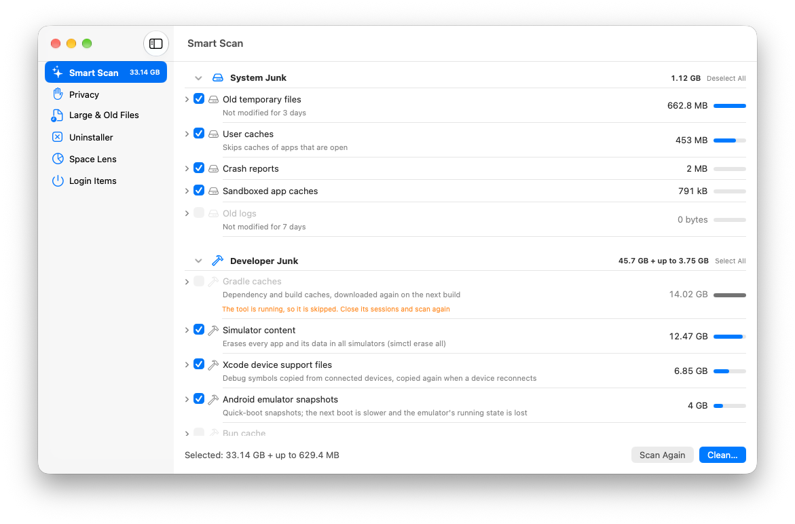
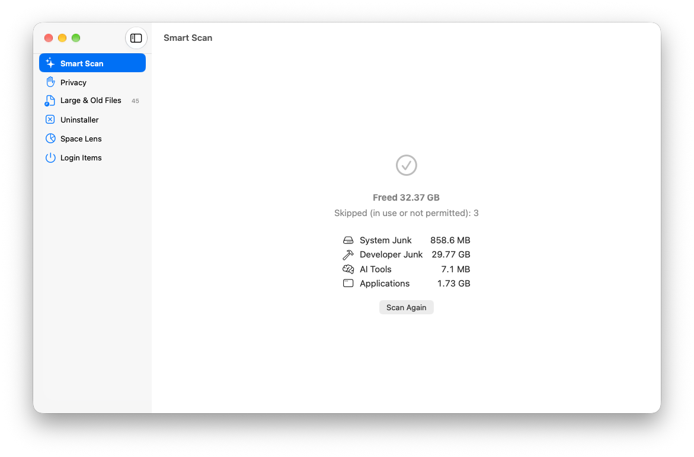
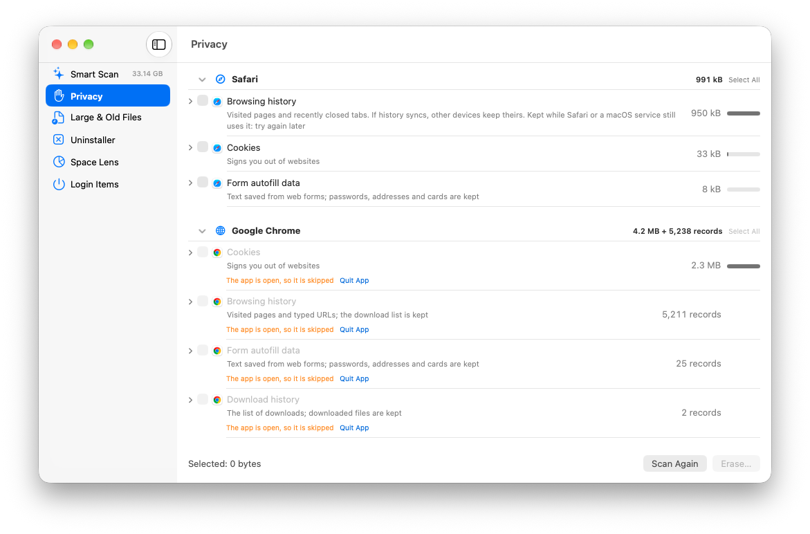
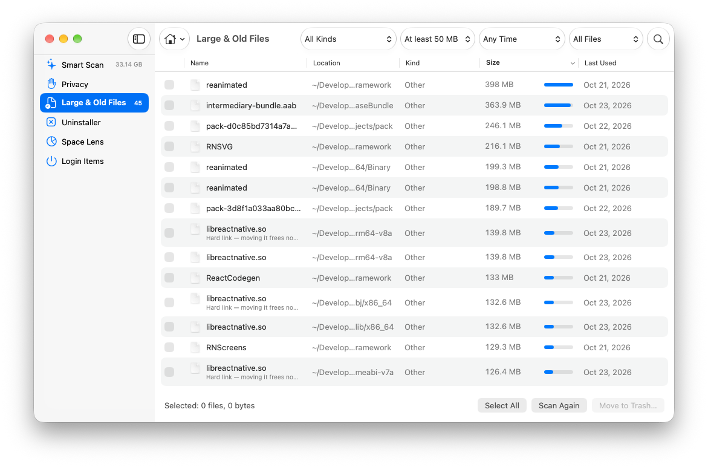
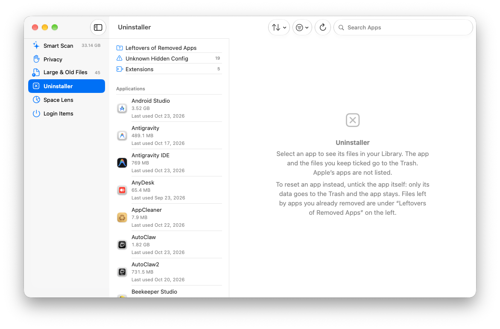
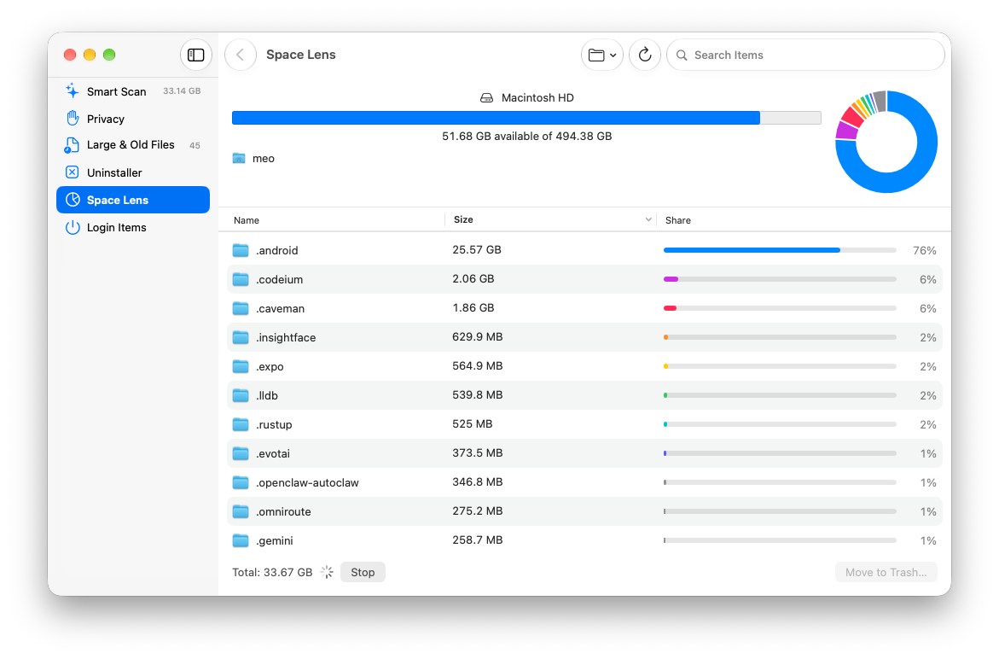

Smart Scan
System junk, developer junk and app caches in one scan: Xcode DerivedData and simulators, npm, Yarn, pnpm, Cargo, Gradle, Docker, Homebrew and dozens more. When a tool has its own cleanup command, CleanMate uses it.
A free, open-source Mac cleaner that frees disk space and clears privacy traces — built for developers, careful with your files.
Free and open source (MIT). Requires macOS 13 Ventura or later, Apple silicon or Intel.
brew install --cask homielab/tap/cleanmate
System junk, developer junk and app caches in one scan: Xcode DerivedData and simulators, npm, Yarn, pnpm, Cargo, Gradle, Docker, Homebrew and dozens more. When a tool has its own cleanup command, CleanMate uses it.
Old sessions and caches of Claude Code, Codex, Gemini CLI, Copilot CLI, Ollama and LM Studio models — often several gigabytes — listed one by one so you choose what goes.

Browsing history, download history, cookies and autofill for Safari, Chrome, Edge, Brave, Arc, Firefox and more, plus recent items and shell history. Nothing is ticked until you choose it.

Find big or unused files in your home folder, a folder you pick or an external drive, filter by size, age and kind, and spot exact duplicates.

Remove apps together with their data, reset a misbehaving app, find leftovers of apps already deleted, and clean up Homebrew casks properly.

Browse any folder sorted by size with a chart of what fills it, drill down, preview with Quick Look and move what you don't need to the Trash.

Free space on each drive, a 30-day trend, and what CleanMate freed.
Disable, enable or remove the launch agents that start with your Mac.
Rebuild Launch Services, reset Quick Look, restart Finder and Dock, delete Time Machine local snapshots — no administrator password.
Every module shows what it found and its size. Nothing is removed until you confirm.
Caches and logs that apps rebuild are deleted. Your files, apps and app data go to the Trash, so you can put them back.
⌘Z puts back what a module just moved to the Trash, and an activity log records every removal.
No account, no analytics, no telemetry. The only network connection is the update check, which you can turn off.
No administrator rights, no privileged helper, no system files. Passwords, keys, documents and photos are never touched.
Apps that are open, and files a running process still uses, are left alone.
No, it is optional. With it, CleanMate can also read the Trash, Safari data and some app containers. CleanMate asks once at first launch, and you can grant it later in System Settings › Privacy & Security › Full Disk Access.
Yes. CleanMate is open source under the MIT license: no subscription, no ads, no paid tier. The source code is on GitHub, and you are welcome to read it, build it yourself or contribute.
This app is for macOS only. A separate CleanMate for Ubuntu is being developed with the same safety rules; there is no Windows version.
No. CleanMate is an independent open-source project, not affiliated with MacPaw or CleanMyMac.